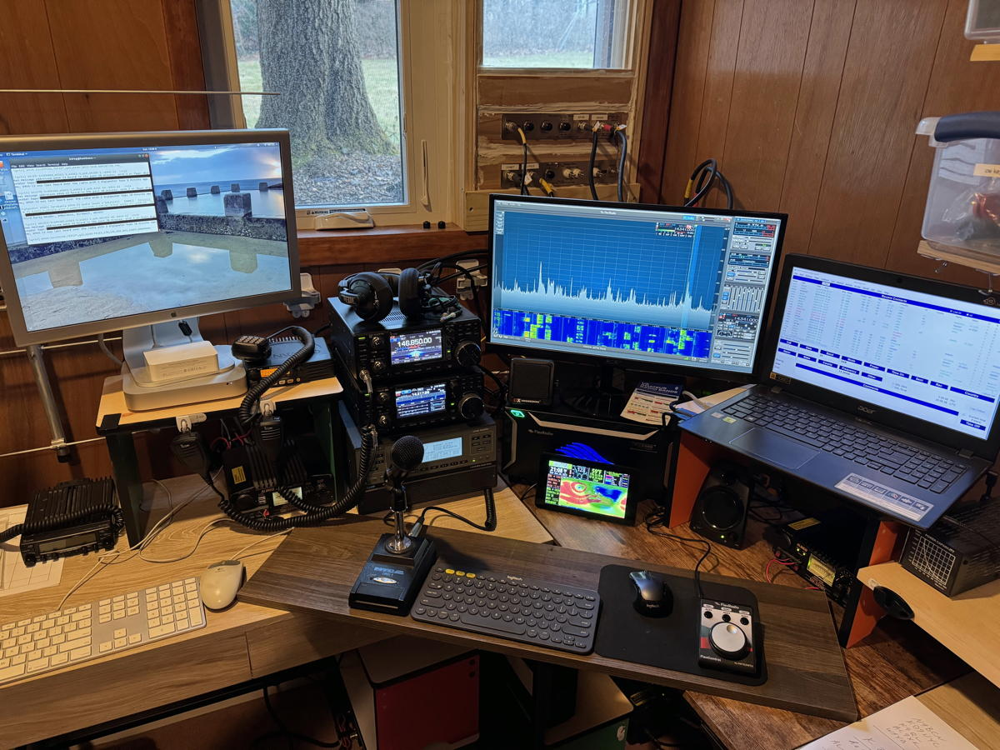

{kind=link}
flowchart TD A[Flex 6400] --- B[Acer PC] A --- E(SmartControl) A --- F[SPE Linear Src 1] A --- C(Network Switch) C --- D(Wifi Router)
HF-1 Block Diagram
I have a small room in our basement set aside for my radio shack.

The W3TM-11 APRS I-Gate uses the Kenwood TM-281A connected to a Mac Mini running Ubuntu and the direwolf software TNC. I have a 2 m/70 cm J-pole antenna on the roof of my house at about 6 m from the ground.
Since fall of 2023, I have been experimenting with an APRS-tt (touch-tone) station using the IC-9700 connected to an Acer Laptop running Direwolf 1.7.
The station is configured to log-in to the APRS-IS network under W3TM-8. When the right sequence of DTMF tones is entered, I (and a couple of ham friends) are able to have our positions reported nearby some locations that are relevant to area hams: our mountaintop club station, the 146.85 W3YA and 146.76 W3GA repeaters, Hoss’s Restaurant, and the location where we hold our monthly club meetings.
More specific details about the rig and PC settings for this station can be found here.
My primary HF station that I am callig HF-1 just for fun uses the FlexRadio 6400 transceiver. The Flex drives an SPE Expert Linear 1K amplifier. The radio has an Inrad M629 microphone. An Acer laptop running SmartSDR 3.5.9 is used to control the radio.
flowchart TD A[Flex 6400] --- B[Acer PC] A --- E(SmartControl) A --- F[SPE Linear Src 1] A --- C(Network Switch) C --- D(Wifi Router)
HF-1 Block Diagram
My second HF station runs an IC-7300. It also connects to the SPE Expert Linear 1K amplifier. I use either the stock hand mic or a Heil Proset iC headset with a footswitch.
flowchart TD A[IC-7300] --- B[Acer PC] A --- H(Straight Key) A --- I(Heil Proset iC Headphones) A --- J(DX Engineering PTT Footswitch) A --- C[Alinco 12V Power Supply] C --- D(Surge Protector) D --- E(120V outlet) A --- F[SPE Linear Src 2] F --- G(220V outlet)
HF-2 Block Diagram
I have a home office that I also use as an operating position.
A third HF station is located in my office. I’m running the IC-705. At the moment, the HF capability is receive-only, as I have a W6LVP receive only magnetic loop for the HF antenna. The VHF/UHF side of the rig is connected to a slim jim antenna. Both antennas connect via a diplexer to the sole IC-705 antenna port.
flowchart TD A[IC-705]---|USB|B[Macbook Pro 15] A --- I[Mic] A --- C[Wall AC Adapter] A---|Coax|D[HF/VHF + UHF Diplexer] D---|Coax|E[W6LVP Preamp] E---|Coax|H[W6LVP HF Loop] E --- G[Wall AC Adapter] D---|Coax|F[Slim Jim] A ---|USB|K[Raspberry Pi 3B] K ---|USB|J[USB Battery]
HF-3 Block Diagram
I have been experimenting with remote control over HF 1 using Windows 11 running on a Macbook Pro and Chrome Remote Desktop.
I have a ClearNode UHF Allstar node on 51401. The node supports EchoLink (W3TM-L), and as of 2024-11-28 it connects to the Brandmeister DMR network.
I used this node for the K3P Special Event station in June 2023. At least two hams connected via the node to participate in the event.